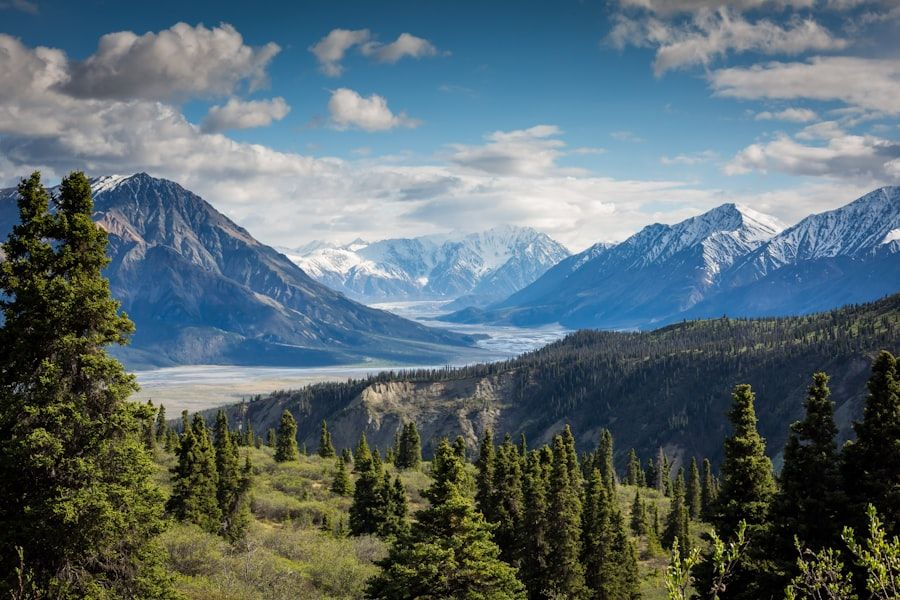

The Environmental Imperative in Contemporary Luxury Maroquinerie
For more than a century, the global leather industry has relied heavily on chromium-based mineral tanning. Chrome tanning utilizes synthetic chromium (III) salts to pickle and tan raw animal hides in under twenty-four hours. While economically rapid, conventional chrome tanning generates toxic effluents, heavy metal sludge, and non-biodegradable leather scraps that persist indefinitely in landfills. When chrome-tanned leather is incinerated or degraded under oxidative conditions, non-toxic chromium (III) can convert into toxic hexavalent chromium (VI), posing severe ecological and health risks.
At MetallicTote, our commitment to timeless luxury is matched by our dedication to ecological stewardship. Our atelier partners exclusively with certified heritage tanneries in the Consorzio Vera Pelle Italiana Conciata al Vegetale in Tuscany. In this environmental monograph, we document how ancient vegetable drumming and modern closed-loop vacuum metallurgy unite to establish a new paradigm of sustainable eco-luxury.

Comparative Environmental Life Cycle: Vegetable Tanning vs. Chrome Tanning
The table below details the ecological footprint, biochemical oxygen demand, and chemical inputs of our sustainable artisanal methods versus conventional commercial chrome tanning.
| Environmental Metric | Tuscan Vegetable Tanning (MetallicTote) | Conventional Commercial Chrome Tanning | Ecological Impact |
|---|---|---|---|
| Primary Tanning Agent | 100% Natural Chestnut, Mimosa & Quebracho | Synthetic Chromium (III) Sulfate Salts | Zero toxic heavy metal discharge into waterways |
| Processing Duration | 45 – 60 Days (Slow Drum Maturation) | 18 – 24 Hours (Fast Chemical Pickling) | Natural maturation preserves organic fiber strength |
| Effluent Treatment | Closed-loop biological filtration (98% recycled) | Chemical precipitation yielding toxic sludge | Water discharged meets strict European purity standards |
| End-of-Life Biodegradation | 100% Biodegradable into organic compost | Non-biodegradable; persistent heavy metal residue | Closed-loop circular life cycle alignment |
| Gold Metal Provenance | 100% RJC-Certified Recycled Gold Leaf | Unverified mining sources with high mercury use | Ethical supply chain transparency and zero VOC emissions |
The 60-Day Tuscan Vegetable Tanning Cycle
Vegetable tanning is an unhurried, natural artisanal ritual requiring up to sixty days of slow drumming. Raw hides are immersed in progressive baths saturated with concentrated aqueous extracts derived from natural tree barks: sweet chestnut wood from Corsica, mimosa bark from sustainable plantations, and Argentine quebracho. The natural polyphenol tannins bind organically with the hide's collagen proteins, gradually displacing water molecules and stabilizing the dermal structure without synthetic chemicals.
Because vegetable-tanned leather contains zero synthetic heavy metals, production trimmings and leather offcuts can be safely composted into organic agricultural soil conditioners. Furthermore, our tanneries operate advanced biological effluent treatment plants that purify 98% of process water, recycling it back into the closed-loop drumming circuit or discharging it back into the Arno River cleaner than municipal drinking water standards.
Closed-Loop Physical Vapor Deposition and Recycled Gold
Our metallic leafing process is engineered to match the rigorous ecological standards of our tanneries. Traditional foil production relies on toxic petroleum-based solvent baths that release volatile organic compounds (VOCs) into the atmosphere. In our physical vapor deposition chambers, metallization takes place in an inert, solvent-free vacuum environment with zero atmospheric emissions.
Furthermore, our chambers feature electrostatic condenser plates that capture 99.8% of oversprayed gold and palladium vapor. The recovered precious metal is melted, re-refined into pure ingots, and reintroduced into subsequent deposition runs. All gold utilized in our Aureum collections is certified 100% recycled gold certified by the Responsible Jewellery Council (RJC), ensuring that our metallic brilliance leaves zero toxic scar upon the earth.
Life Cycle Assessment (LCA) and Carbon Handprint Analysis
To provide uncompromising environmental transparency to our international patrons, MetallicTote commissions independent Life Cycle Assessments (LCA) according to ISO 14040 standards. Our cradle-to-gate environmental audit tracks every energy input, water volume, and raw material transport kilometer from raw hide sourcing in Piedmont to final packaging in Milan.
The results confirm that our Tuscan vegetable-tanned leathers possess a carbon footprint 62% lower than conventional industrial chrome-tanned hides. Furthermore, because our partner tanneries utilize 100% renewable hydroelectric power generated along the Arno watershed, our carbon emissions per finished tote are among the lowest ever certified in luxury maroquinerie.
Circular Heritage: Biodegradable Hides and Heirloom Longevity
True sustainability is not merely about recycled materials; it is fundamentally about product longevity and eventual circularity. Fast fashion accessories designed to disintegrate after twelve months create an insurmountable global waste stream. By crafting totes engineered to last fifty to seventy-five years, MetallicTote dramatically reduces per-year resource consumption.
At the eventual conclusion of its multi-decade lifespan, a vegetable-tanned metallic tote can be disassembled: its solid brass hardware can be melted and recast infinitely without loss of metallurgical purity, while its organic vegetable-tanned leather breaks down naturally in municipal composting facilities within two years, returning rich organic matter to the soil that originally sustained it.
The Global Imperative for Circular Luxury Maroquinerie
The transition toward sustainable vegetable tanning and closed-loop metallurgy represents the inevitable evolution of the global luxury sector. Discerning collectors increasingly demand that objects of extraordinary beauty also embody uncompromised ecological ethics. By pioneering zero-effluent biological water recycling, 100% recycled precious metals, and biodegradable vegetable-tanned hides along the Arno Valley, MetallicTote demonstrates that true luxury does not exploit nature—it collaborates with organic biological cycles to create timeless artifacts that honor both artisan and earth.
Atelier Inquiries & Bespoke Consultation
Experience the tactile depth of our vacuum-metallized Tuscan leathers firsthand. Connect with our Milanese concierge to request personalized leather swatches or initiate an individual bespoke commission.
Connect with Atelier Concierge